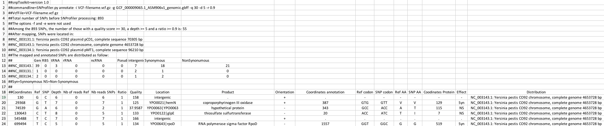

6. Filtering, annotating and combining SNPs¶
To investigate the genetic variants in the vcf files we will use the program snpToolkit.
The -h option will display the following message:
snpToolkit -h
positional arguments:
{annotate,combine} commands
annotate Please provide one or multiple vcf files
combine combine snpToolkit output files in one alignment in fasta format
Two options are possible: annotate or combine.
6.1. SNPs filtering and annotion¶
The snpToolkit annotate command will display general information about the usage of the program:
snpToolkit annotate
usage: snpToolkit annotate [-h] -i IDENTIFIER -g GENBANK
[-f EXCLUDECLOSESNPS] [-q QUALITY] [-d DEPTH]
[-r RATIO] [-e EXCLUDE] [--plot]
optional arguments:
-h, --help show this help message and exit
snpToolkit annotate required options:
-i IDENTIFIER provide a specific identifier to recognize the file(s)
to be analyzed
-g GENBANK Please provide a genbank file
snpToolkit annotate additional options:
-f EXCLUDECLOSESNPS exclude SNPs if the distance between them is lower then
the specified window size in bp
-q QUALITY quality score to consider as a cutoff for variant
calling. default value [20]
-d DEPTH minimum depth caverage. default value [3]
-r RATIO minimum ratio that correspond to the number of reads
that has the mutated allele / total depth in that
particular position. default value [0]
-e EXCLUDE provide a tab file with genomic regions to exclude in
this format: region1 start stop
Here is a simple example on how to use snpToolkit:
snpToolkit annotate -i VCF-filename.vcf.gz -g genbankFile.gbff -q 30 -d 5 -r 0.9
snpToolkit can automatically recogninze vcf files generated with the following programs: samtools mpileup, gatk HaplotyCaller and freeBayes. The vcf files could be gzipped or not. In the command line above, snpToolkit will filter and annotate all SNPs in the vcf file(s) that fullfil the following criteria: quality >= 30, depth of coverage >= 5 and ratio >= 0.9.
Note
For each SNP position, the ratio (r) is calculated as follows:
r= dm / (dr + dm)
- dr= Number of reads having the reference allele
- dm= Number of reads having the mutated allele
The output file(s) of snpToolkit is a tabulated file(s) that you can open with Microsoft Excel and it will look as follow:
The header of the generated snpToolkit output file includes useful information e.g. raw number of SNPs, Number of filtered SNPs, SNPs distribution, etc…
6.2. Compare and combine multiple annotation files¶
After generating a set of output files, you can run snpToolkit combine:
usage: snpToolkit combine [-h] --location LOCATION [-r RATIO] [-d DEPTH]
[--bam BAMFOLDER] [--snps {ns,s,all,inter}]
optional arguments:
-h, --help show this help message and exit
snpToolkit combine required options:
--location LOCATION provide the name of the locus you want to create
fasta alignment for
snpToolkit additional options:
-r RATIO SNP ratio
-d DEPTH depth cutoff for cheking missing data
--bam BAMFOLDER path to the folder containing bam files
--snps {ns,s,all,inter}
Specify if you want to concatenate all SNPs or just
synonymous (s), non-synonymous (ns) or intergenic
(inter) SNPs. default [all]
snpToolkit combine will compare all the SNPs identified in each file and create two additional output files:
- a tabulated files with all polymorphic sites
- a
fastafile.
As we will be working with ancient DNA, a small fraction of your genome could be covered. In this case we will use the option --bam to indicate the path to the folder containing the bam files.
The option -d must be used with the option --bam. By default, all SNPs will be reported. This behaviour can be changed using the option --snp.
Note
It is also possible to use the option --bam with modern data as some genomic regions could be deleted.
The file reporting the polymorphic sites is organized as follows:
| ID | Coordinates | REF | SNP | Columns with SNP information | sample1 | sample2 | sample3 | sample4 |
|---|---|---|---|---|---|---|---|---|
| snp1 | 130 | A | T | 1 | 1 | 1 | 1 | |
| snp2 | 855 | C | G | 0 | 0 | ? | 1 | |
| snp3 | 1315 | A | C | 1 | 1 | 0 | 0 | |
| snp4 | 12086 | G | A | 1 | 0 | ? | 0 |
The table above reports the distribution of all polymorphic sites in all provided files.
As we provided the bam files of the ancient DNA samples, snpToolkit will check if the polymorphic sites (snp2 and snp4) are absent in sample3
because there is no SNP in that positions or because the region where the snps are located is not covered. In the latter case, snpToolkit will add a question mark ? that reflects a missing data.
From the table above, it will be possible to generate a fasta file, like the one below:
>Reference
ATCGGGTATGCCAATGCGT
>Sample1
ACCGGGTATGCCAATGTGT
>Sample2
ATTGGGTATGCCAGTGCGT
>Sample3
?TTGAGT?TGTCA?TACGT
>Sample4
ATCGGGTATGCCAATGCGT
The fasta output file will be used to generate a maximum likelihood tree using IQ-TREE
6.3. Phylogenetic tree reconstruction¶
There are several tools to build phylogenetic trees. All of these tools, use an alignment file as input file. Now that we have generated an alignment file in fasta format, we will use IQ-TREE to build a maximum likelihood tree.
We use IQ-TREE for several reasons:
It performs a composition chi-square test for every sequence in the alignment. A sequence is denoted failed if its character composition significantly deviates from the average composition of the alignment.
Availability of a wide variety of phylogenetic models.
IQ-TREEuses ModelFinder to find the best substitution model that will be used directly to build the maximum likelihood phylogenetic tree.Multithreading
The phylogenetic tree generated can be visualized using Figtree.